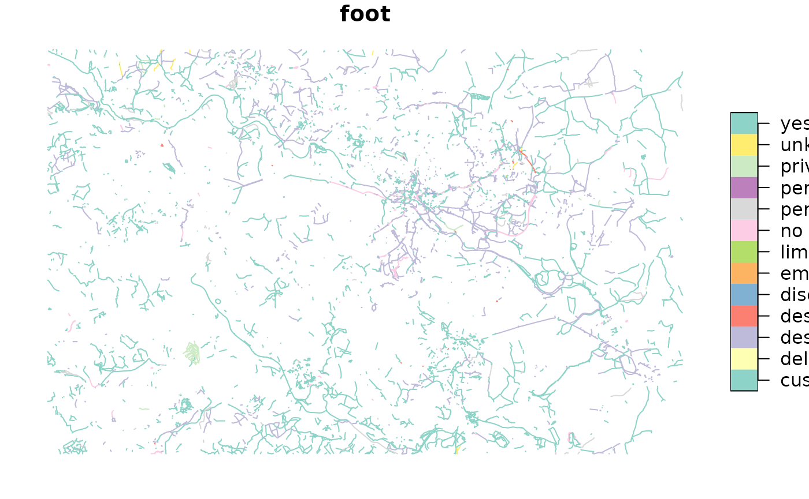
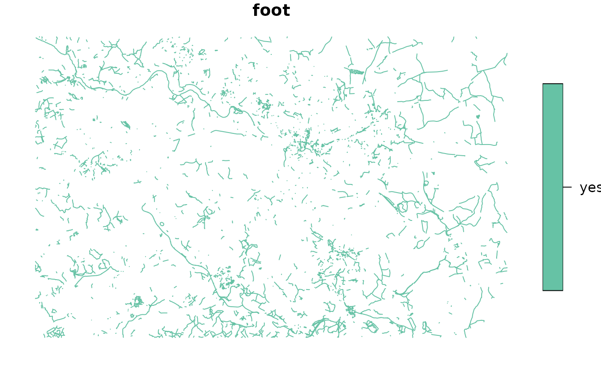

osmintro.RmdIn this section we will focus on two aspects necessary to work with OpenStreetMap (OSM) data for transport research:
The ability to download OSM data via command line might sound more intimidating compared to Graphical User Interface (GUI) but it can provide a much more flexible approach to working with OSM, including data analysis which will be covered in the later sections.
Before we begin, I want to remind the basic structure of OSM tags (if you need a more detailed refresher, see FINISH). A tag consists of a key and a value (key = value). A value can take both numeric and character values. The tags and their meanings that we will use in this notebook are outlined in the table below.
| Tag | Meaning |
|---|---|
| Highway | It indicates the road type (link) |
| Foot | Provides information on the legal access for pedestrians (link) |
| Access | Provides information on the legal permissions and restrictions (link) |
| Service | Provides additional information on the services (roads, businesses) (link |
Here we will learn how to download OSM data using osmextract package in R. osmextract that has been developed to make OSM data more accessible. It returns a well-formatted OSM data that can be used as part of a reproducible research. Another advantage of osmextract over, for example, osmdata is its capability to download large datasets. To learn more about this, check out its website.
osmextract offers several different functions to download, read, and translate OSM data, there is no one best function and the choice depends on, for example, whether you already have a dataset that needs to be translated. In this section it will be assumed that you want to download the OSM data. For this, two functions will be demonstrated:
In this section we will only touch upon the basics, so if you want to learn more about the package, go through the Get Started article published on the osmextract website.
# Before we start, we need to load the libraries that we will be using throughout the practical.
library(tidyverse)
library(sf)
library(osmextract)
library(tmap)
# If you do not have these libraries installed, then run the following code (uncomment first) and load them again:
# pkgs = c("tidyverse",
# "sf",
# "osmextract")
# install.packages(pkgs)oe_get() is perhaps the core function in the package and the one I would recommend starting from because it is quite straightforward once introduced, yet versatile enough to meet the needs of an advanced user.
?osmextract::oe_get() # Documentation of a function
# The first step is to define the place. In this case it is Leeds.
# A useful function is oe_match_pattern() to search for patterns in a provider's database. It is helpful in indicating a correct region name for a given provider.
osmextract::oe_match_pattern("leeds")
osmextract::oe_match_pattern("yorkshire") # "yorkshire" is associated with several different geographic zones.
region_leeds = "Leeds" # Note the capital L. The function in which the object will be used is not case sensitive but I would still recommend using the exact string to minimize the likelihood of an error.
leeds = osmextract::oe_get(
place = region_leeds,
provider = "bbbike", # Indicates the provider; default is geofabrik
layer = "lines", # Default; returns linestring geometries (highways, waterways, aerialways)
force_download = TRUE, # Updates the previously downloaded .osm.pbf file (default is FALSE)
force_vectortranslate = TRUE # Forces the vectorization of a .pbf file to .gpbf even if there is a .gpbf file with the same name (default = FALSE)
)leeds_test object in the code chunk below).
# leeds_test = osmextract::oe_get(
# place = "leeds",
# force_download = TRUE,
# force_vectortranslate = TRUE
# )
#> No exact match found for place = leeds and provider = geofabrik. Best match is Laos. Checking the other providers. An exact string match was found using provider = bbbike.
# Even though there was no exact string match (i.e., leeds) in a default provider, it still returned the dataset we needed by switching the provider. In this case it is fine, but it could cause problems for, for instance, "yorkshire" (test it out if you are up for a little challenge).This function is a quick and useful way of returning a desired road network. However, it is important to point out that (compared to oe_get()) some filtering is being done before returning the network. Thus, it is important to understand what kind of network is exactly returned and if that suits your particular needs.
leeds_net_walking = osmextract::oe_get_network(
place = region_leeds,
mode = "walking", # What mode of transport is to be returned? Default is cycling
provider = "bbbike",
force_download = TRUE,
force_vectortranslate = TRUE
)If you have a look at both datasets, you will notice that leeds has more observations (rows). This is because of filtering done prior to returning the network. Yet, leeds_net_walking has more columns. This is because oe_get_network filtering relies on tags that are not, by default, returned as columns when oe_get() is used.
# checking out the dimensions of both datasets
leeds %>% dim()
#> [1] 159050 10
leeds_net_walking %>% dim()
#> [1] 126782 13
# returning column names
leeds_names = leeds %>% names()
leeds_net_walking_names = leeds_net_walking %>% names()
# returning column names that are in the `leeds_net_walking` but not `leeds`
setdiff(leeds_net_walking_names,
leeds_names)
#> [1] "access" "foot" "service"If you look at the documentation, you will notice that additional access, foot, and service tags are used to define a pedestrian network.
In the following subsection we will learn how to get those extra tags (and many more) using oe_get function that would allow you to define your own network.
Have you noticed “other_tags” column in the leeds and leeds_net_walking datasets? This is where various additional tags are stored that can be utilized for our analysis. OSM has hundreds of them and there is a useful function in osmextract that allows you to browse through them. I would recommend spending some time exploring the variety of tags that you think might be relevant to your particular task.
# checking the keys that are stored in the 'extra_tags' column
osmextract::oe_get_keys(leeds)To download a dataset that has tags as columns (i.e., not stored in the ‘extra_tags’ column), we can take advantage of the ‘extra_tags’ argument in the previously demonstrated functions.
# The first step is to create a character vector with all the tags we want to be returned.
tags_needed = c("access",
"foot",
"service")
leeds_tn = osmextract::oe_get(
place = region_leeds,
provider = "bbbike",
layer = "lines",
force_download = TRUE,
force_vectortranslate = TRUE,
extra_tags = tags_needed
)
# Let's check if we have those 3 tags as columns
leeds_tn %>% names
#> [1] "osm_id" "name" "highway" "waterway" "aerialway"
#> [6] "barrier" "man_made" "access" "foot" "service"
#> [11] "z_order" "other_tags" "geometry"
# right now we have the information needed to return a pedestrian network as defined by the `oe_get_network` function
# THE REST WILL HAVE TO BE FIXED
# highway_not = c("abandonded", "bus_guideway", "byway", "construction", "corridor", "elevator", "fixme", "escalator", "gallop", "historic", "no", "planned", "platform", "proposed", "raceway", "motorway", "motorway_link")
#
# '%!in%' = Negate('%in%')
# leeds_tn_subset = leeds_tn %>%
# filter(!is.na(highway) & highway %!in% highway_not | highway == "cycleway" & foot == "yes") %>%
# filter(is.na(access) | access %!in% c("no", "private") | foot == "yes")
#
# leeds_tn_subset2 = leeds_tn %>%
# filter(!is.na(highway) & highway %!in% highway_not | highway == "cycleway" & foot == "yes") %>%
# filter(is.na(access) | access %!in% c("no", "private") | foot == "yes") %>%
# filter(is.na(foot) | foot %!in% c('private', 'no', 'use_sidepath', 'restricted'))
#
# leeds_tn_test %>% dim()
# leeds_tn_subset %>% dim()
# leeds_tn_test2 %>% dim()
# leeds_tn_subset2 %>% dim()The extra_tags argument can also be used with oe_get_network function.
tags_needed1 = c("footway")
leeds_net_walking_tn1 = osmextract::oe_get_network(
place = region_leeds,
mode = "walking", # What mode of transport is to be returned? Default is cycling
provider = "bbbike",
force_download = TRUE,
force_vectortranslate = TRUE,
extra_tags = tags_needed1
)There is another way of adding tags – by re-creating the .gpkg file using oe_vectortranslate() (see here) however this might be a less intuitive approach. So I would recommend, especially if you are a beginner, using ‘extra_tags’ argument as part of the oe_get or oe_get_network function.
Plotting, or mapping, might seem like something done to visualize the end results, but it is also incredibly useful throughout the data science project. Indeed, Beenchman and Lovelace (2022) argue that visualizations can be central to making inferences in geographical analysis. Given that, this section aims to introduce you to two simple techniques for mapping:
mapview libraryBase R plot function is great for plotting on-the-go as it is pretty intuitive and quick as it can be added at the end of a pipe operation. It is great to get a general sense of the data and its structure which, then, can be used to inform further decisions.
# Let's plot all the highways that have a non-NA value in the `foot` column:
leeds_tn %>% select(foot) %>% plot() # all non_NA values 
leeds_tn %>% filter(foot == "yes") %>% select(foot) %>% plot() # returning only "yes" values in `foot`
tmap
tmap is a flexible package that allows to build both static and interactive maps in R. In this section I will show you how to use its one-liner qtm() function to build interactive maps (note: it might be code-efficient, but not always time-efficient! It might take time to build maps, especially the large ones).
# first, we need to set out tmap mode to interactive
tmap::tmap_mode("view")
leeds_interactive = leeds_tn %>%
filter(!is.na(foot)) %>%
tmap::qtm(fill = "foot") # add `qtm()` at the end of to visualise your data
leeds_interactive
# to save a map as html in your working directory
tmap::tmap_save(leeds_interactive, # a tmap object
"leeds_interactive.html") # a name of a new html fileYou have learned how to download the desired dataset but, most likely, you do not want to have to download it every single as it can be time-consuming (however, it is a good practice to update it constantly). Good news is that you can save a dataset as an RDS file and, if needed, share it with other (R) users.
Exercises:
to finish: